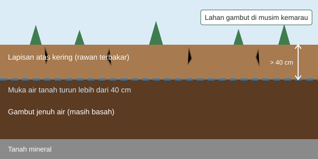

Menjaga Gambut Tetap Basah Sebelum Api Muncul
Tirta Gambut adalah konsep sistem yang memantau kondisi lahan gambut secara berkala, memberi peringatan bertingkat kepada warga dan petugas, lalu menjalankan pembasahan di titik rawan ketika gambut mulai mengering. Website ini menjelaskan cara kerja sistem, menampilkan contoh data pemantauan, dan menyediakan formulir bagi warga untuk melaporkan kejadian di lapangan.

Mengapa Lahan Gambut Mudah Terbakar?
Gambut terbentuk dari sisa tumbuhan yang tertimbun dalam kondisi jenuh air selama ribuan tahun. Selama basah, gambut menyimpan karbon dan sulit terbakar. Masalah muncul ketika kanal drainase menurunkan muka air tanah. Lapisan atas gambut mengering dan api dapat menjalar di bawah permukaan, sehingga sulit dipadamkan dan menghasilkan kabut asap yang luas.
Kelemahan Pemantauan yang Ada
- Banyak pemantauan masih mengandalkan satu batas tinggi muka air saja.
- Peringatan berhenti pada notifikasi, sementara tindakan menunggu petugas tiba di lokasi.
- Detektor api bersifat reaktif karena baru bekerja setelah kebakaran terjadi.
Apa yang Dilakukan Tirta Gambut?
Tirta Gambut menggabungkan beberapa parameter lapangan menjadi satu status risiko yang mudah dipahami, kemudian menghubungkan status tersebut dengan tindakan nyata.
- Memantau tinggi muka air, kelembapan tanah, kondisi udara, dan curah hujan.
- Menilai risiko kekeringan menjadi empat status: Aman, Waspada, Siaga, dan Awas.
- Memperingatkan warga dan petugas melalui dasbor dan pesan singkat.
- Bertindak dengan menyalakan pompa pembasahan di titik yang berstatus Siaga atau Awas.
Penjelasan lengkap tiap tahap tersedia di halaman Cara Kerja Sistem.
Ringkasan Kondisi Titik Pantau
| Status | Jumlah Titik | Pompa Aktif |
|---|---|---|
| Aman | 3 | 0 |
| Waspada | 2 | 0 |
| Siaga | 1 | 1 |
| Awas | 0 | 0 |
| Total | 6 | 1 |
Rincian setiap titik dapat dilihat di halaman Data Titik Pantau. Jika Anda melihat asap, titik api, atau gambut yang retak, segera laporkan kejadian.